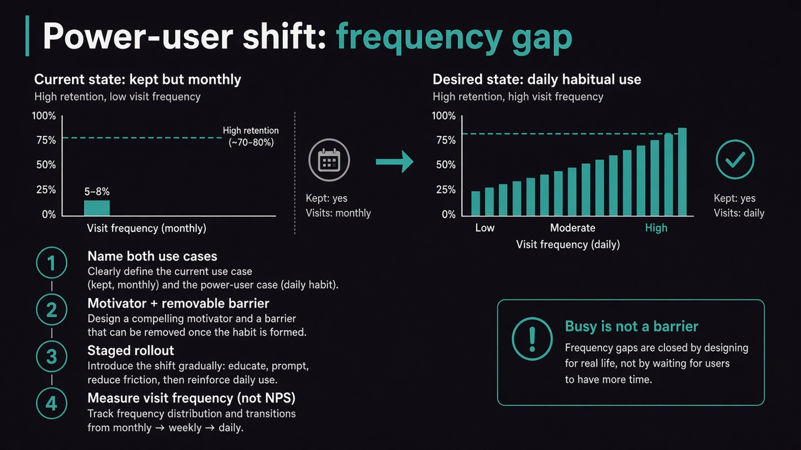

Retention without frequency is a fake win
Source: George / prodmgmt.world (@nurijanian)
original post
What it claims
Some users never churn and barely open the product. Retention counts them as kept; usage shows one login a month. Closing that gap needs a named current use case, a named frequent use case, a motivator, a removable barrier (not “users are busy”), a staged rollout, and metrics that count how often people show up — not NPS, feature clicks, or onboarding completion. The power-user-shift lens is controversial when the real use case is low-frequency, but it is useful when you deliberately want to engineer higher-frequency habits around a real job.
Why it matters for a PO
Engagement programs on top of a monthly chore waste the team. If the frequent use case never lands, every retention tactic downstream has little to work with. POs own whether “kept” means valued or forgotten.
3 takeaways
- Name both use cases in verbs someone could adopt; “use it more” fails the test.
- Barriers must be removable causes (repeated setup, data in another tool) — busy is not one.
- Measure visit frequency over time; vanity engagement metrics can rise while visits stay monthly.
Practice this week
Pick one feature users keep but rarely open. Write current vs frequent use case in one sentence each. Name one barrier you could remove this quarter. If the only barrier is “they’re busy,” that is your research brief for the next three conversations.